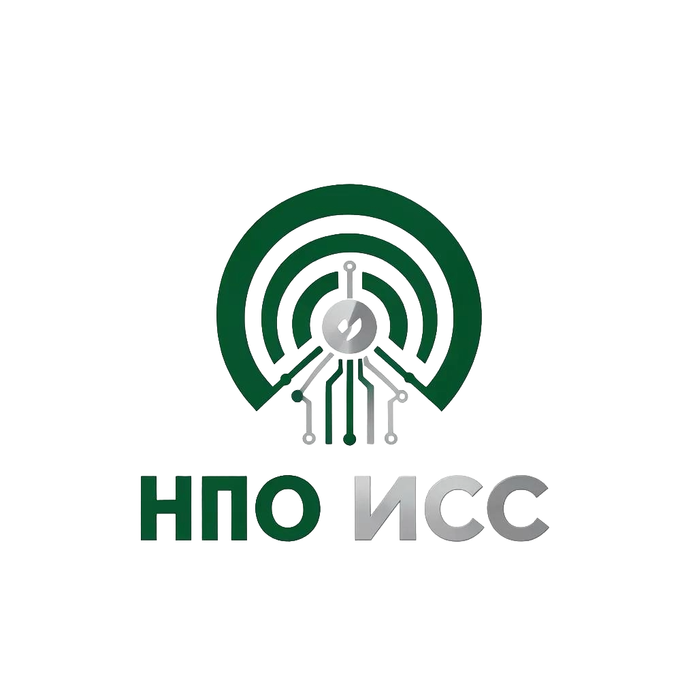
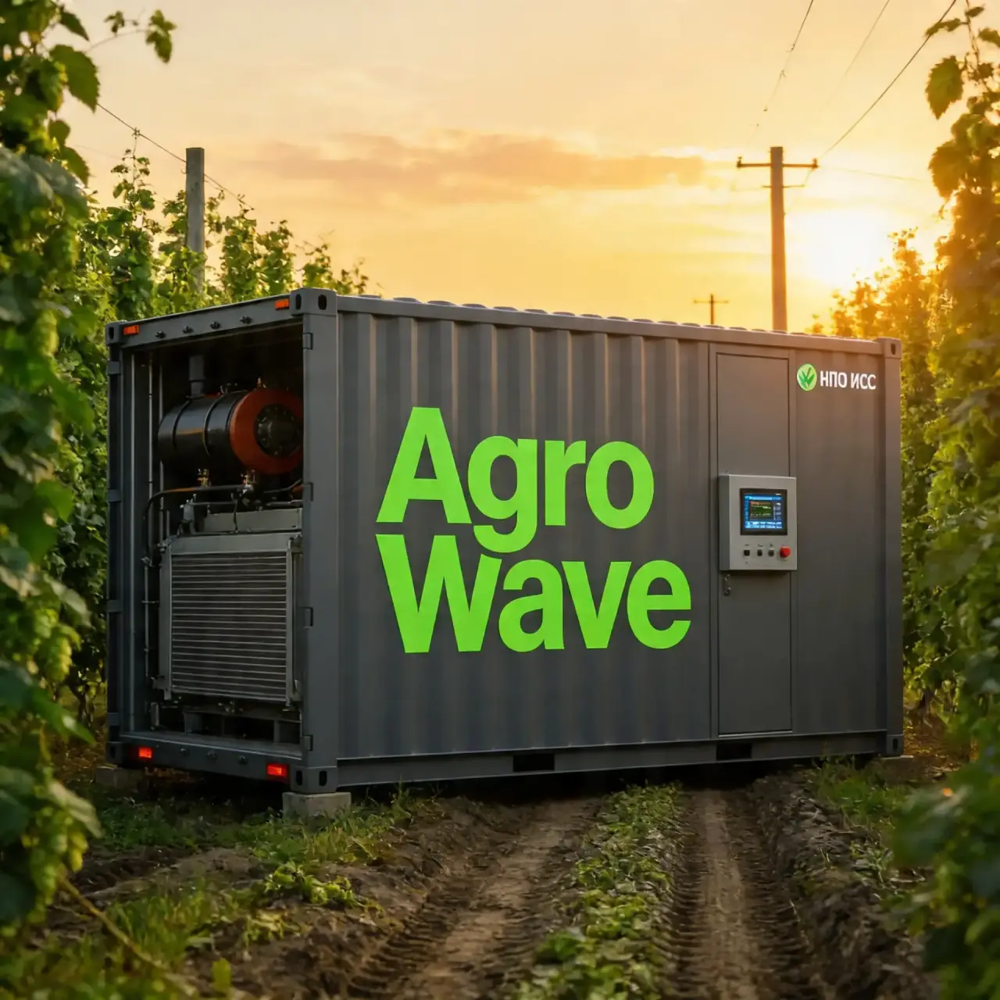

«Бережная сушка на сверхвысоких скоростях»

Мы разрабатываем инновационные мобильные комплексы Agro-Wave. Наши решения создаются на стыке фундаментальной науки и современных IT-технологий.
В основе лежат разработки ведущих аграрных ВУЗов. Сейчас мы переходим к этапу промышленной сборки флагманской модели «Agro-Wave Lab».
Кратное ускорение процесса сушки
Максимальное сохранение нутриентов
Снижение затрат на эксплуатацию